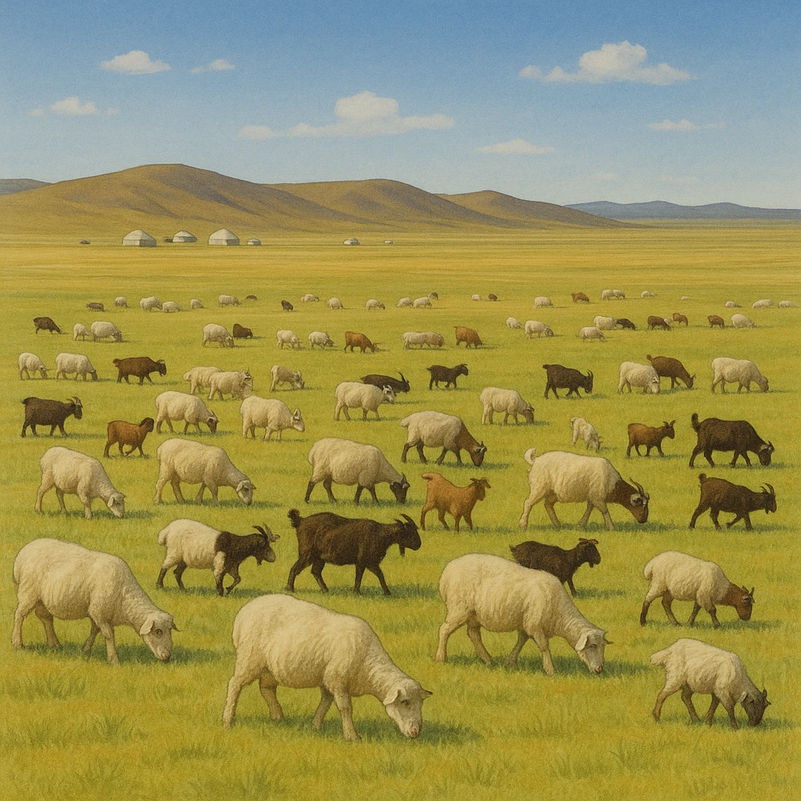
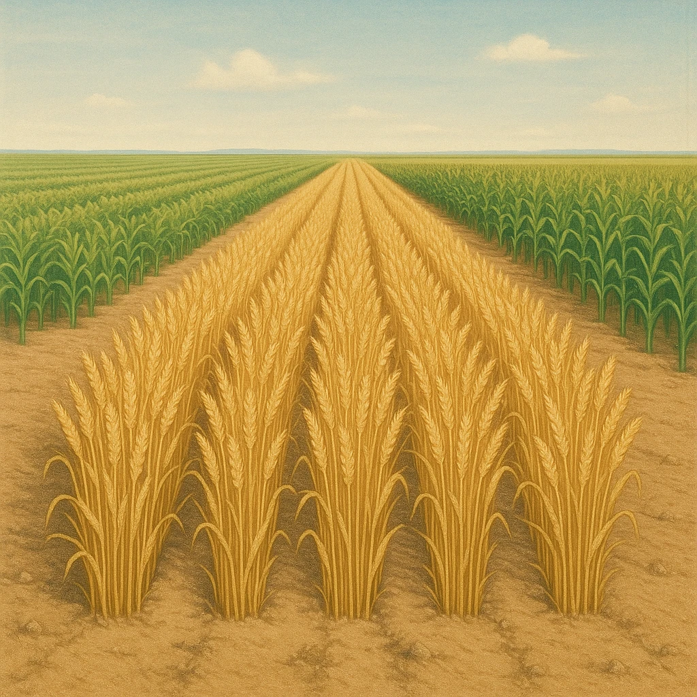
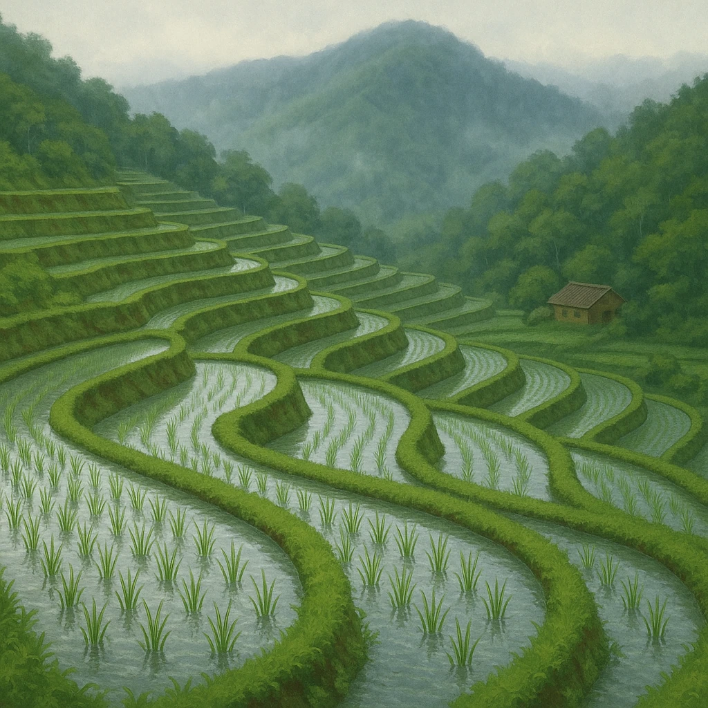
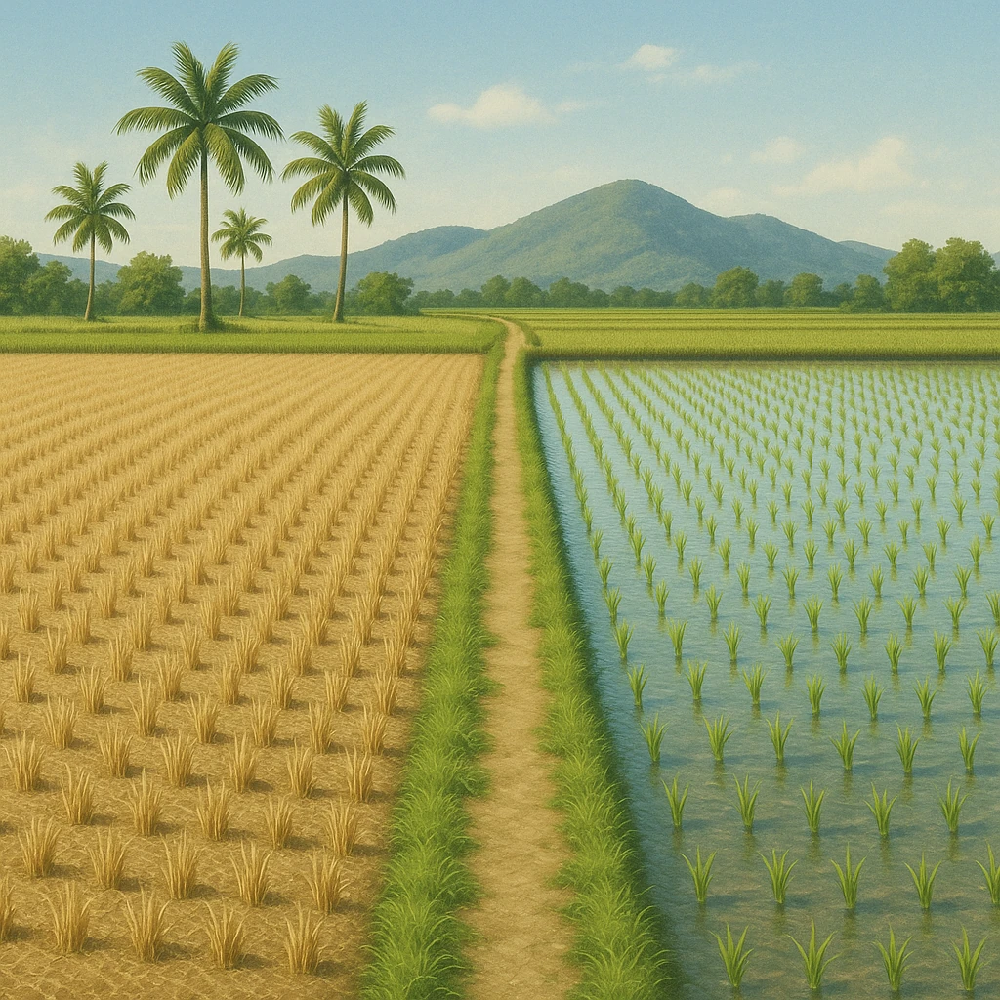

Ⅰ-3
中国の農業
農業は
西→東・北→南
で変わる

内陸部（西）
①
牧畜
乾燥して雨が少ない。羊やヤギの遊牧が中心。

東北・華北（北）
②
畑作
雨が少なめ。小麦・とうもろこしなどの畑の作物が中心。

華中・華南（南）
③
稲作
雨が多く温暖。米づくりと茶の栽培が盛ん。

華南（最南）
④
二期作
特に暖かく、同じ田で米を年2回つくる。
ポイント
分け目は
降水量
。雨の多い南が
③
、少ない北が
②
、乾いた西が
①
。
第4章 アジア州
SEED EDUCATION